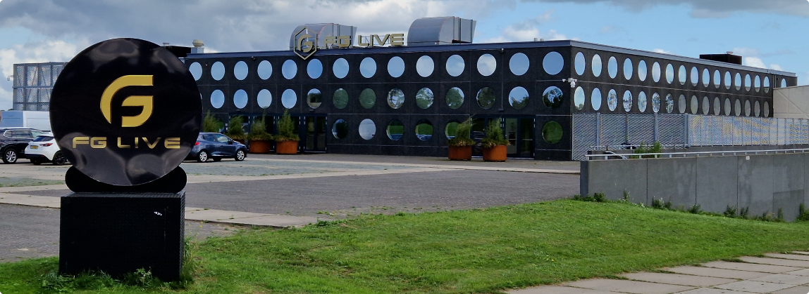

Aan het Meer van Luna ligt de horecagelegenheid SKEEF.
Ze beschikken over een prachtig restaurant en een dakterras waar onder andere (bedrijfs)feestjes gegeven kunnen worden.
Ook beschikt SKEEF over een watersportgelegenheid.
Hier kunt u waterskiën, wakeboarden of SUP'en op het Meer van Luna.
Aan dit meer ligt ook het Strand van Luna.
Hier kunt u lekker in de zon liggen of genieten van het prachtige zwemwater.
FG Live
Aan het Stand van Luna ligt de feestgelegenheid FG Live.
Voorheen “de Waerdse Tempel” heeft van 2021 tot 2023 een volledige renovatie gekregen, en is nu het grootste evenementencentrum in de regio.
Met een capaciteit tot 2.300 personen is er genoeg ruimte voor de beste festiviteiten.
Voor meer informatie over het programma en de locatie kunt u de website van FG Live bezoeken.

FG Live van de voorzijde
Sportlagune
Op ongeveer 5 minuten fietsafstand van Stad van de Zon ligt de sportfaciliteit De Sportlagune.
Hier is MyHealthClub gevestigd om alle voorzieningen te bieden die je nodig hebt.
Van fitness, squash en tennis tot zwemlessen, ze hebben het allemaal.
Voetbal
Net buiten Stad van de Zon ligt de voetbalvereniging Reiger Boys.
Deze prachtige voetbalvereniging bestaat al meer dan 75 jaar, en is de plek om te voetballen voor jong en oud.
Ook is er op het eiland een sportkooi aanwezig, waar kinderen overdag samen kunnen voetballen, basketballen of hockeyen.